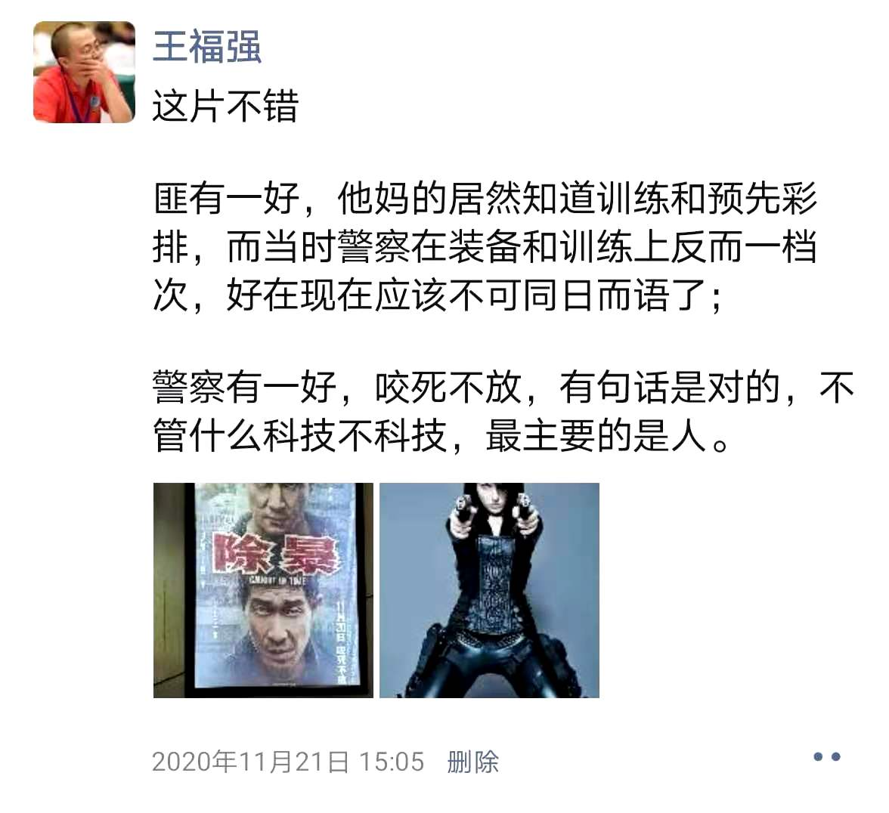

怎么做好一场分享或者培训
王福强
写这个不是说自己做分享或者培训有多好，而是说看到太多可以改进的地方，而且自己也踩过坑，淌过雷，没收到尾款， 所以，算是现身说法， 将自己切身感受过且实践过的经验跟大家分享，嗯， 免费 ；）
受众第一
要做好一场分享或者培训，首先要做的不是准备PPT， 不是针对目标内容做功课， 而是要对人做功课，要对你的“客户”做功课，你要搞清楚来听你分享或者培训的人都是什么职能、层级或者说背景，这样才能有针对性，否则，鸡同鸭讲，那个难受劲儿， 你经历过就会知道…
遥想扶墙早年给平安做企业内训那两段经历，那可以说用天壤之别来形容都不为过啊：
第一场是深圳平安金科的架构师部门， 两天内训， 第一天理论，第二天workshop，因为第一天偏理论，而且是系统性的，所以不是所有人都能get或者有兴趣，但第二天我因为有个策略，给他们安排了课后作业，让大家分成四组， 每一组将自己现在手上工作的难题或者疑惑的地方提出来，形成一个主题大家来讨论，然后分享，最后我做点评。 第一天结束安排下去之后，看培训接口人好像不高兴，估计是觉得我这个老师怎么这样子，“让你来分享和培训，你倒是把挑子扔给我们员工了…”， 好在， 第二天的结果还算不错， 结束的时候大家都挺热情高涨，还有粉丝把扶墙的第一本书拿出来，说珍藏温习了n年，哈哈，也算有点儿小荣幸。
那第二天为什么看起来是“推卸责任的行为”却收获了大家的好评呢？ （为啥是好评？ 因为后面其它部门通过其它Agent点名要我，只是我没再去）
因为我贴近受众的日常场景做剖析，这样的好处是，大家熟悉，感同身受，有体感， 另外就是，当你指出方案的权衡在具体细节上到底如何做，哪里有缺陷，哪里复杂但无效，哪里又设计比较巧妙的时候， 大家的眼里迸发出来的是“哇”的目光，居然还可以这样…
第二场好像是在上海的平安银行，总之是个业务研发部门，这次就比较惨淡， 原本应该也是两天的课程，我上午几个小时就“因地制宜”的结束了，因为我发现我说的东西，他们听不懂，就像一个拳手出拳打在了软绵绵的弥勒佛的肚子上， 我感觉很没劲，他们也木愣愣的坐着，那种感觉很难受， 所以，我也就草草收场了，况且HR对接人也觉得讲得不好，她的员工没有学到东西，反映也不好。 为什么会这样呢？ 我事后反思，应该是受众不对， 这个部门的人大多是只有三五年开发经验的业务研发， 你跟他们讲架构、讲平台、讲云计算、讲软件交付、讲devops、讲安全防护体系， WTF？ R U kidding me?
所以，同样是平安， 两场内训结果迥异， 原因就在于，你在开始之前，有没有搞清楚你的受众到底是谁？ 他们有什么特点？他们的基础和背景是什么？ 只有搞清楚这些，才能有的放矢， 才能搞清楚应该用什么形式、什么语言、什么内容来打动他们形成共鸣…
此后我也学乖了， 再有客户或者agent找我做内训，我都要先问清楚目标受众是谁，上下文和背景是什么， 如果不合适，我也就婉拒了，宁可钱不赚，也不再去空耗心力和体力，最主要太没意思了…
三元素
摸清受众的情况，下面就是思考怎么开展分享和培训了。 我这些年看到好多不同公司内部的分享， 发现太多人分享只是自己“省力”而让来学习的人“费力”。
我觉得我之前说的一句话也不好：“你得把别人讲明白”，其实不是把别人讲明白，而是你怎么让别人理解你的意图和确切要表达的意思，就好像讲师不应该说“（你们）听明白了吗？”， 而应该问“我说明白了吗？”，只是大多数人，大多数时候，都只是在自说自话， 自己心里明明白白，就觉得别人只要一听也应该明明白白，而世间之事，很多就坏在这“应该”二字上…
我也犯过类似的错误，曾几何时，我觉得是常识的东西，却发现别人tmd压根儿就不知道，等对方说出了自己的理解，我才发现差了一大截，罪魁祸首就是我，因为我“以己度人”了…
要做好一场分享，我们不能以自我为中心，而应该以受众为中心，而以受众为中心，最简单的做法就是把他们当小白（认为你知道的东西，他们一概不知），在这个前提下，你就得思考如何才能让大家从0到1的吸收你的分享内容。
这里有一个框架（我也不知道算不算我的框架，因为聪明人太多， 前面的聪明人也挺多）， 即Big Picture First， 一上来不是马上就切入具体的操作啦、概念啦、流程啦这些，而是先把要背景和大概的方向跟大家先说清楚， 我习惯用“场景-角色-系统”三元素来界定一个内容框架， 这跟电商经常提的“人货场”类似，只不过场景略有不同。
一个软件系统，如果一上来就讲操作讲概念，大家是蒙蔽的： 这个软件系统是做什么用的？ 在什么场景下用？ 什么人用？ 怎么用？ 不能帮大家先解决这些疑问，分享再多的细节和专业知识也是没用的，智商200的人或许可以根据蛛丝马迹自己拼凑出一副地图然后找到自己现在在那儿， 而大多数人第一次接触某个场景和系统，TA是不会迅速get到你的点到底在哪里的，说的再嗨，也是自嗨…
只有先给大家把场景说明白，然后再将这个场景里牵扯的角色/人如何与这个软件系统交互说明白，剩下的分享内容才更容易让大家理解，这是我认为比较好的一个分享思路的框架。
彩排
前几天陪“室友”去看场电影散散心， 选了《除暴》这部电影， 看后有些小感慨：

实际上，不论做什么事儿， 都得有“真功夫”才行，这“真功夫”就体现在这日常的训练中，所谓“台上一分钟台下十年功”， 诚不我欺啊！
即使是没法《日日是好日》，那临阵磨枪也是好的，而彩排，就是做分享和培训之前的“临阵磨枪”， 对节奏和内容先有个感觉，然后再通过彩排去验证和修正，之后，才能大概率的收获一个好的分享和培训结果。
以上就是扶墙我如何做好一场分享和培训的分享， 愿对各位看官有所启发， 临走之前，有钱的捧个钱场儿，没钱的捧个人场儿吧，哈哈哈哈
「为AI疯狂」星球上，扶墙老师正在和朋友们讨论有趣的AI话题，你要不要⼀起来呀？^-^
这里
- 不但有及时新鲜的AI资讯和深度探讨
- 还分享AI工具、产品方法和商业机会
- 更有体系化精品付费内容等着你，加入星球(https://t.zsxq.com/0dI3ZA0sL) 即可免费领取。(加入之后一定记得看置顶消息呀！)

存量的时代，省钱就是赚钱。
在增量的时代，省钱其实是亏钱。
避坑儿是省钱的一种形式，更是真正聪明人的选择！
弯路虽然也是路，但还是能少走就少走，背后都是高昂的试错成本。
订阅「福报」，少踩坑，少走弯路，多走一步，就是不一样的胜率！